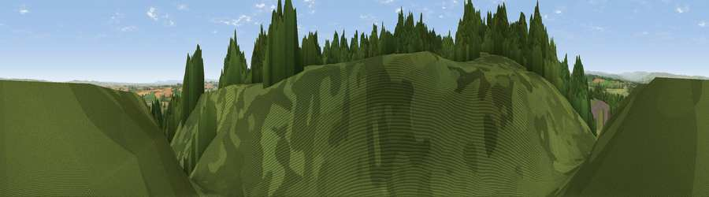

Adam Hill
#22330 in England · top 59% of its area beats it · near BarninghamThe view, rendered

A 360° render of this exact spot computed from the terrain model, tree cover and land cover — summer colours, afternoon light, calibrated against photographs of famous viewpoints. Real trees, hedges and buildings will differ in detail.
The panorama
Grey silhouette: terrain skyline in each direction (720 bearings, Earth curvature and refraction included). Dashed green: skyline with trees (+15 m) and buildings (+8 m) as obstacles. Blue strip: how far the ground is visible on each bearing.
Where the view opens
Wedge length = distance to the farthest visible ground on that bearing (vegetation-aware). Rings at 10, 25 and 50 km.
What fills the view
57% grassland · 24% woodland · 18% cropland · 1% built-up
Angular shares of the visible panorama (visual magnitude), not map area. Landscape diversity 0.45 (0–1 Shannon).
Key numbers
More beautiful places nearby
The staircase of upgrades: each row has a higher view potential than everything closer. Driving times are estimates from straight-line distance, calibrated against real road routing — check an actual route before setting out.
| Place | Direction | Drive | Score |
|---|---|---|---|
| Viewpoint near Barningham | NW · 2 km | ~5 min | 58.6 |
| Viewpoint near Barningham | NNW · 2 km | ~5 min | 59.4 |
| Viewpoint near Barningham | S · 3 km | ~7 min | 68.9 |
| Viewpoint near Gayles | SE · 5 km | ~11 min | 69.2 |
| Viewpoint near Gayles | SSE · 5 km | ~11 min | 70.0 |
| Viewpoint near Barningham | WSW · 6 km | ~12 min | 72.7 |
| Viewpoint near Barningham | WSW · 6 km | ~13 min | 74.1 |
| Viewpoint near Eggleston | NNW · 16 km | ~28 min | 76.0 |
54.48583, -1.86411 · source: osm peak · position refined by local search. Computed location — check access rights before visiting.